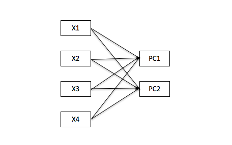
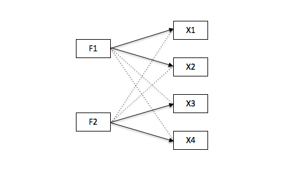
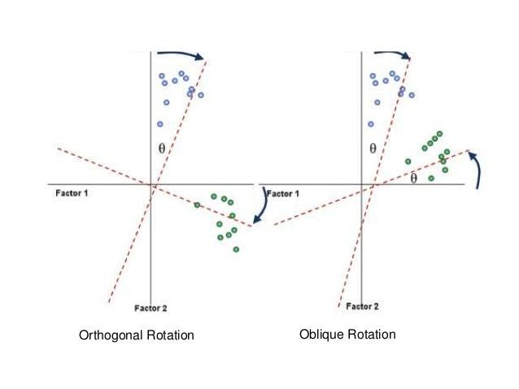

Phân tích nhân tố ẩn (factor analysis) là kỹ thuật giúp tìm ra các biến ẩn (factor) đằng sau các nhóm biến ban đầu.
Cả Principal Component Analysis (phân tích nhân tố chính) và Factor Analysis (phân tích nhân tố ẩn) đều là các kỹ thuật làm giảm dữ liệu, bằng cách sử dụng sự tương quan giữa các biến ban đầu để gộp thành các biến mới. Với k biến ban đầu, k biến mới sẽ được tạo ra.
Tuy nhiên, 2 phương pháp này có sự khác biệt về thuật toán cũng như ứng dụng.
Thuật toán
Trong PCA, các thành phần chính (principal components) là các tổ hợp tuyến tính của tất cả các biến ban đầu, sao cho PC1 là tổ hợp giữ được lượng thông tin nhiều nhất, PC2 được bổ sung vuông góc với PC1 nhằm thêm các thông tin còn thiếu trong PC1 và chứa lượng thông tin ít hơn PC1,…cứ như vậy, các PC được bổ sung sau sẽ vuông góc với các PC trước đó và chứa lượng thông tin giảm dần. Như vây các PC phải vuông góc với nhau, đồng nghĩa với việc các PC không được tương quan với nhau.
Trong EFA, các nhân tố (factor) là tổ hợp tuyến tính của các biến ban đầu có tương quan với nhau, sao cho mỗi nhân tố giữ lại được lượng thông tin nhiều nhất của 1 nhóm các biến ban đầu. Khác với PCA, các factor có thể không vuông góc với nhau, đồng nghĩa với việc các factor có thể tương quan với nhau
Mục đích sử dụng
PCA được sử dụng để đơn giản hoá tập dữ liệu, sao cho với số biến mới tối thiểu vẫn giữ lại được tối đa lượng thông tin của tập dữ liệu ban đầu. Do đó, các biến mới (principal components) không cần được đặt tên

EFA được sử dụng để tìm ra biến ẩn (latent variable, factor, concept) đằng sau các biến đo được có tương quan với nhau (correlated observed variables, group of items). Nói cách khác, nhóm biến ban đầu phản ánh các khía cạnh của 1 khái niệm chung. Do đó các biến ẩn/ khái niệm chung này phải có ý nghĩa và gọi tên được

Ứng dụng
PCA được ứng dụng để tìm ra số nhóm tối ưu cho các bài toán phân lớp khách hàng (K-means clustering), hoặc làm giảm số biến đầu vào cho các mô hình dự báo
EFA thường được sử dụng trong trong lĩnh vực marketing và nghiên cứu thị trường, xây dựng các bộ câu hỏi cho survey để đánh giá nhận thức/ hành vi của khách hàng về sản phẩm/ dịch vụ như: mức độ hài lòng với sản phẩm, sự trung thành với nhãn hiệu, lý do khách hàng mua sản phẩm…Sau đó các biến mới cũng có thể được sử dụng làm biến đầu vào cho các mô hình
41.2 Các bước thực hiện
Bước 1: Kiểm định xem tập dữ liệu có đủ điều kiện cho factor analysis không
Số quan sát tối thiểu là 50
KMO test (0->1) kiểm tra mức độ tương quan của các biến ban đầu. KMO result > 0.5 là chấp nhận được
Bước 2: Chọn số factor (nhóm các biến ẩn) trong tập dữ liệu. Đây là bước khó nhất vì cần phải đảm bảo yếu tố giải thích được trong thực tiễn. Khi thực hiện, cần lưu ý các điểm sau.
Ý nghĩa kinh doanh
Eigen value > 1
Scree plot tại điểm thay đổi độ dốc
41.2.1 Thực hiện factor analysis
Trong đó chọn 1 trong 2 phương pháp xoay vector sau:
Chọn Orthogonal (rotate = “varimax”) khi ta cho rằng các factors không có tương quan với nhau
Chọn Oblique (rotate = “oblimin”) khi ta cho rằng các factors có tương quan với nhau (chủ yếu chọn phương pháp này)

=> Xem loadings (correlation value) xem có hiện tượng 1 biến ban đầu tương quan mạnh với nhiều hơn 1 factor không (high multi-loadings)
41.2.2 Đánh giá độ tin cậy và độ chính xác của mô hình
Ta mong đợi các biến đo được phải tương quan với nhau theo từng nhóm, đồng nghĩa chúng đo cùng 1 khái niệm (độ tin cậy, reliability) và phải đo đúng khái niệm ta cần (độ chính xác, validity)
Độ tin cậy được đo bằng chỉ số Cronbach’s alpha. () >= 0.3 là pass. Ta có thể cân nhắc loại bỏ 1 vài biến ban đầu không có tương quan với các biến khác, tuy nhiên phải đánh đổi bằng thông tin bị mất đi
Độ chính xác được đo theo 2 tiêu chí:
Convergent validity: Chỉ số AVE (Average Variance Extracted) của các factor phải > 0.5 đồng nghĩa với việc các items giải thích được ít nhất 50% độ biến thiên của factor đó
Discriminant validity: Chỉ số AVE của từng factor phải > Shared variance giữa các factor, đồng nghĩa với việc các factor phải tương quan mạnh hơn với các items đo chính factor đó chứ không tương quan nhiều với các items đo các factor khác
\[Shared.variance=Correlation.between.factors^2\]
Ví dụ:
Reliability test: Với cả 2 factor, AVE đều > 0.5 => nhóm các item (x1,x2,x3) và (x4,x5,x6) đều giải thích được trên 50% độ biến thiên của 2 factor tương ứng => good
Validity test: Xét 3 trường hợp của Shared Variance
Shared Variance = 0.49 (< 0.72 và < 0.66) => good
Shared Variance = 0.64 (< 0.72 và < 0.66) => pass
Shared Variance = 0.90 (> 0.72 và > 0.66) => fail
41.2.3 Đặt tên cho các factor
Tùy theo kết quả loadings các nhóm biến để đặt tên cho biến ẩn (khái niệm) sao cho biến ẩn có ý nghĩa tổng hợp nhất
Lưu ý: Các bước 2 -> 4 có thể phải thực hiện nhiều lần để có kết quả ưng ý
41.3 Thực hành trong R
Sử dụng tập dữ liệu là kết quả phản hồi survey của 90 KH cho 14 tiêu chí họ ưu tiên khi chọn mua ô tô (bao gồm giá, tính an toàn, tiết kiệm nhiên liệu, dịch vụ hậu mãi…). Survey được thiết kế dưới dạng thang đo Likert với 5 lựa chọn (5-point Likert scale) từ “Very low” (tương ứng với 1) đến “Very high” (tương ứng với 5)
library(tidyverse)library(psych)library(GPArotation)load("data/efa-df.Rda")df <- efa.dfrm(efa.df)df %>% head
Bước 4: Đánh giá độ tin cậy và chính xác của mô hình
() = 0.61 cho thấy mô hình đáng tin cậy. Xem thêm bảng Reliability if an item is dropped ta thấy nếu loại bỏ các biến Safety, Exterior_Looks, Testimonials có thể cải thiện () tuy nhiên rất ít => Ta chọn giữ lại tất cả các biến này để không bị mất thông tin
alpha(df)
Có thể tính toán thêm AVE và Shared Variance cho validity test